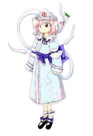

Yuyuko é frequentemente vista como:
Calma e elegante – ela fala com suavidade e possui uma postura nobre, digna de uma princesa fantasma.🧠 Inteligência e percepção
Apesar de seu jeito leve, Yuyuko é extremamente inteligente:
Observa as situações com calma
Entende a natureza das pessoas com facilidade
Costuma agir no momento certo, mesmo que pareça distraída
Ela frequentemente sabe mais do que aparenta.
🍡 Comportamento despreocupado
Yuyuko tem um lado bastante relaxado:
Ama comer, especialmente doces
Pode agir de forma infantil às vezes
Faz comentários inesperados ou fora de contexto
Mesmo assim, raramente perde sua elegância.
🌸 Natureza gentil e melancólica
Yuyuko é uma personagem profundamente ligada à morte:
Ela compreende a morte como parte natural da existência
Possui uma certa melancolia por seu passado
Mas escolhe viver de forma leve e alegre
Sua personalidade mistura serenidade, tristeza e aceitação.
👻 Relação com os outros
Ela trata os outros personagens com leveza e curiosidade:
Vê as pessoas como interessantes e divertidas
Confia muito em sua serva Youmu Konpaku
Mantém amizade próxima com Yukari Yakumo
Apesar de sua aparência frágil, ela é uma figura respeitada em Gensokyo.
Princesa de Hakugyokurou
Yuyuko governa o reino dos espíritos em Hakugyokurou, no Mundo dos Mortos. Ela supervisiona as almas e mantém a ordem entre os fantasmas que ali residem.
Guardião do Saigyou Ayakashi
Yuyuko está diretamente ligada à árvore youkai Saigyou Ayakashi, uma cerejeira que drena vida para florescer. Ela carrega a responsabilidade de manter esse poder selado.
Manipulação da morte
O poder central de Yuyuko é controlar a morte:
Pode induzir a morte instantânea
Enfraquecer a força vital de seus inimigos
Manipular almas e espíritos
Controlar o ciclo entre vida e morte
Esse poder é extremamente perigoso e quase impossível de resistir.
Controle espiritual
Yuyuko consegue comandar fantasmas livremente, guiando espíritos e se movendo entre o mundo dos vivos e dos mortos.
Voar e atravessar dimensões
Como um espírito, ela pode voar livremente e atravessar barreiras entre planos, existindo entre o mundo físico e o espiritual.
Ela age como uma presença constante entre a vida e a morte.

Espécie: Fantasma
Título: Princesa Fantasma de Hakugyokurou (Ghost Princess of Hakugyokurou)